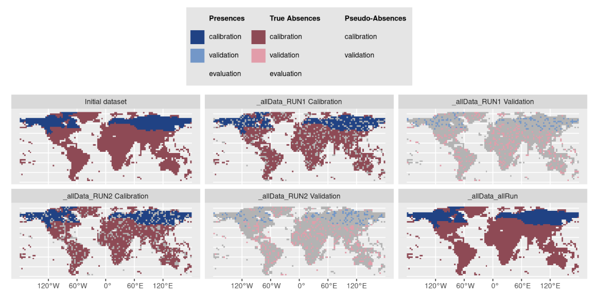

Definition
Whether independent data is available or not (eval.[...]
parameters in BIOMOD_FormatingData),
data-splitting methods allow to divide input data into
pieces to calibrate and validate the
models on different parts.
The general idea behind is to assess how much a model is stable (low variability of results when changing the data), accurate (for predictions) and able to predict new data (to flag problems like overfitting or selection bias).
Note that there are pros and cons to the different methods, that can be dependent on your data and sampling.
How to split data ? - Methods
5 different methods are implemented within biomod2 to
split data through either bm_CrossValidation or BIOMOD_Modeling.
Most common procedures split randomly the original dataset either :
-
random : in
2parts with higher proportion for the calibration part (adjusted withperc) -
kfold : or in
kdata sets of equal sizes:
each part is successively used for the validation while the otherk-1parts are used for the calibration,
leading tokcalibration/validation sets.
For both methods, the splitting can be repeated several times
(nb.rep).
Other procedures are available to test for model overfitting and to assess transferability either in geographic space :
-
block : partitions data in
4bins of equal size (bottom-left, bottom-right, top-left and top-right) (Muscarella et al. 2014) -
strat : uses
kpartitions along thex-(ory-) gradient and returns2kpartitions (Wenger and Olden 2012)
or environmental space :
-
env : returns
kpartitions for each environmental variable provided
These methods can be balanced over presences or absences to ensure equal distribution over space, especially if some data is clumped on an edge of the study area.

Note that it is also possible for the user to define its own data partitioning.
Calibration / Validation - Evaluation
Here is the terminology used within biomod2 regarding
data sets and their use.
The original data set, given to the BIOMOD_FormatingData
function, is the one being split by cross-validation method in 2.
Calibration is the part used to build the model, while
validation is the remaining part used to project the
model onto and compute metrics to assess model’s quality.
A second optional data set can be given through
eval.[...] parameters in BIOMOD_FormatingData :
the evaluation part.
It is only used to project
the model onto and compute metrics to asses model’s quality and
extrapolation capacity.
The evaluation part is never split and all
its data is always used.
Note that you will find this notation in the table returned by the get_evaluations function.
Regarding ensemble modeling, predictions of some
single models are gathered together to obtain one ensemble prediction.
But depending on the way single models are combined
(em.by parameter in BIOMOD_EnsembleModeling),
they may not rely on the same calibration part of the original data.
- Example of same calibration : all RUN1 models using different pseudo-absence data sets, or different algorithms.
- Example of different calibration : all GLM + PA1 models using different calibration / validation data sets.
In consequence, there are 2 cases :
em.by = 'PA+run': one ensemble model is built for each cross-validation fold.
It means that you will have metric values at the ensemble level for both calibration and validation parts.em.byis eitherall,algo,PA,PA+algo: single models with different cross-validation fold are merged together.
As calibration and validation parts do not match anymore, all data is used to compute metrics : you will have metric values at the ensemble level only for calibration column.
Specifications
Cross-validation tables returned by bm_CrossValidation and
get_calib_lines functions,
or accepted by CV.user.table parameter in BIOMOD_Modeling when
CV.strategy = 'user.defined' :
-
contain
TRUE,FALSEorNAvalues :-
TRUEstanding for observations to be included in the calibration part -
FALSEstanding for observations to be included in the validation part -
NAused when building pseudo-absence sets with different sizes
-
as many columns as single models will be built for each selected algorithm
-
column names formatted as :
- for presence-absence / abundance data :
_allData_RUNywithythe cross-validation fold - for presence-only data :
_PAx_RUNywithxthe pseudo-absence set andythe cross-validation fold
- for presence-absence / abundance data :
| _PA1_RUN1 | _PA1_RUN2 | _PA2_RUN1 | _PA2_RUN2 |
|---|---|---|---|
| FALSE | FALSE | FALSE | TRUE |
| TRUE | TRUE | FALSE | FALSE |
| TRUE | TRUE | TRUE | TRUE |
| … | … | … | … |
Note that it is possible to provide your
cross-validation table to the plot
function of a BIOMOD.formated.data object to visualize both
observations and PA / cross-validation sets :
myCalibLines <- get_calib_lines(myBiomodModelOut)
plot(myBiomodData, calib.lines = myCalibLines)
See code examples :
MAIN
functions, BINARY data, section Prepare data & parameters /
Cross-validation datasets
MAIN
functions, ABUNDANCE data, section Prepare data & parameters
/ Cross-validation datasets
References
- Muscarella R, Galante PJ, Soley-Guardia M, Boria RA, Kass JM, Uriarte M, Anderson RP (2014). ENMeval: An R package for conducting spatially independent evaluations and estimating optimal model complexity for Maxent ecological niche models. Methods in Ecology and Evolution, 5, 1198-1205. 10.1111/2041-210X.12261
- Wenger SJ and Olden JD (2012). Assessing transferability of ecological models: an underappreciated aspect of statistical validation. Methods in Ecology and Evolution, 3, 260-267. 10.1111/j.2041-210X.2011.00170.x